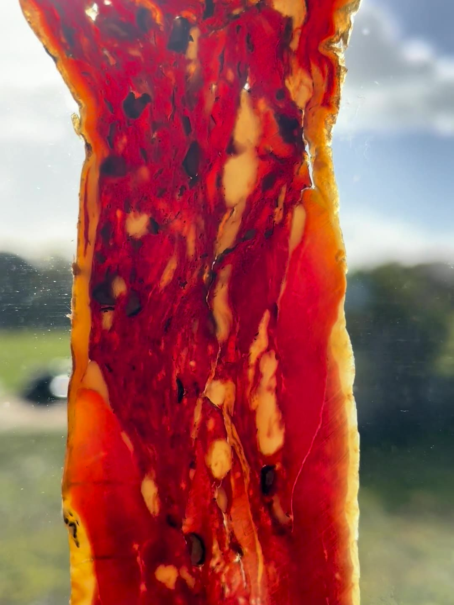
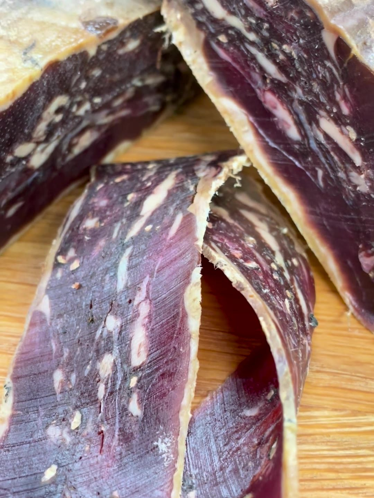

Ducatello
Wild mallard, slow-cured for six months. Made to order, once a year.

What is Ducatello?
Ducatello is wild British mallard, slow-cured for six months. It sits right between prosciutto and salami: the elegance of prosciutto, the boldness of salami. How it is made stays Robert's secret.
When can I get it?
Each one is made to order, and only from mallard taken in the shooting season. Mallard season ends on 31 January. Once a season's are spoken for, that's it until next winter.
What is it for?
A summer wedding, a big birthday or anniversary, or next Christmas. Estates can have theirs made from their own birds.
